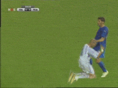
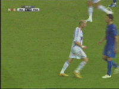
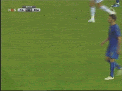
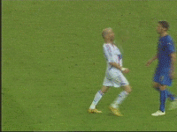
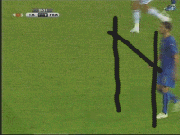

#9961 1 2006-07-09T21:31:36Z KinGAleX http://www.youtube.com/watch?v=j1i_l0OeeMc...&page=1&t=t&f=b
No words can describe how awesome that headbutt is. Seriously.
#200732 2 2006-07-09T21:35:54Z Shark I have just got to say, The World Cup is in Italy's Hands because of Zenidine ZiDane.
ok im done.
#200733 3 2006-07-09T21:36:19Z Rincewind SW You have to agree that Zidane is pretty much Jesus. It's his specially practised move, look how he gets into position before administering pwnage. It's the reason why his head is bald!
#200734 4 2006-07-09T21:36:52Z KinGAleX Firstly, it's Zinedine Zidane.
Secondly, he had absolutely no impact on the outcome of the penalty shootout, so, no, you're wrong.
Thirdly, HEADBUTT.
#200737 5 2006-07-09T21:39:13Z Shark well, first of all, typo.
and next, Zidane is France's Best Penalty Kicker. His absence really hurt France in the Pks.
Finally, im done.
#200738 6 2006-07-09T21:41:17Z Mongy NO! I slept through the whole thing! And missed that frikkin sweet headbutt!
#200739 7 2006-07-09T21:41:32Z KinGAleX Quote: #n
[07:42:03] <Rincewind^SW> I'm pretty sure Zidane would have scored a pen
[07:42:07] <Rincewind^SW> Using his head.
[07:42:16] <KinGAleX> Just run down, and headbutt the ball.
You're right. He would have headbutted that ball right through the keeper.
#200742 8 2006-07-09T21:45:38Z johnny_faneca Zidane is the ultimate JERK!
I hate that guy...
Kingalex: Go hail Jesus instead... Zidapig isn't worth!
#200743 9 2006-07-09T21:47:41Z KinGAleX Capital G, A, X.
You only hate him 'cause his Head is better than yours.
His very holy Head.
#200745 10 2006-07-09T21:48:13Z Twistkill That was a dirty and unforgivable move. I'm so glad he got a red card, but he deserved more. He could have been charged with assault. His goal he scored early in the game was also kind of lucky, as it hit the crossbar, but whatever. Not only that, but France dived a bit. They got a penalty kick for their first dive; the guy who went down wasn't even touched.

Italy still won in the end, though.
#200746 11 2006-07-09T21:50:01Z KinGAleX As I said in the IRC, I prefer this loss and a headbutt to a win and no headbutt. Losses you can over, but not a headbutt from my man Zidane's ever-so-holy Head.
#200754 12 2006-07-09T21:56:04Z McP3000 what a motherf***king pussy. Man, fight you damn skinhead. Dont headbutt the guy in the chest!
What a coward to give such a sucker shot and then get kicked out, leaving his team stunned and left open to lose shamefully.
I've lost all respect for him
#200795 13 2006-07-10T00:45:51Z wedgie Im with KA on this one. I mean what a badass! Zidane just totally pwned that guy. The guys a legend.

#200820 14 2006-07-10T02:47:46Z great_sea Im with KA on this one. I mean what a badass! Zidane just totally pwned that guy. The guys a legend.
I have to agree. It may have been without taste... but it was a freaking headbutt, and it will go down in World Cup history. Whenever people think of the 2006 World Cup, they will remember Zidane's infamous headbutt. I wonder to myself if it was more than an aggravated outburst. Perhaps Zidane had planned beforehand to commit some sort of blatant and memorable foul - you know, to end his career with a bang and a red card. He had already announced he was going into retirement. What's to lose? Heh.
#200840 15 2006-07-10T05:32:57Z Red Reamer I was under the impression that the Italians are cock-biters.
Surely that headbutt was well-deserved.
#200843 16 2006-07-10T05:37:52Z Kablizzy I was under the impression that I should come to Australia and beat your face in with a length of sausage.
#200847 17 2006-07-10T05:55:07Z 47 what a motherf***king pussy. Man, fight you damn skinhead. Dont headbutt the guy in the chest!
What a coward to give such a sucker shot and then get kicked out, leaving his team stunned and left open to lose shamefully.
I've lost all respect for him
Dude, he
did fight. Headbutts are freakin' hard to pull off right. Any schmo can throw a punch, but a headbutt? That's HARDCORE. Besides, ZiDane knocked him out cold. ZiDane even gave him time to prepare. It wasn't a quick turn around punch. He bloody stops, turns around and charges.
ZiDane = F*ckin' METAL. \m/
#200848 18 2006-07-10T05:59:27Z Red Reamer 
Enough said... or shown.
#200850 19 2006-07-10T06:38:36Z theshav Zidane!!!!

Now that is pwnage.
#200857 20 2006-07-10T07:58:30Z kamikaze3000 since france cheated and knocked spain out, i've wanted them to lose. im glad that italy won, but zidane did ruin the game. i had so much respect for him before that, but that just took it all away. france deserved to lose as zidane acted like that
#200864 21 2006-07-10T08:32:04Z astro Firstly, it's Zinedine Zidane.
Secondly, he had absolutely no impact on the outcome of the penalty shootout, so, no, you're wrong.
Thirdly, HEADBUTT.
Duh... because he wasn't in it! If Italy still had 11 men on the field, and had Zidane for the penalty, they very well may have won the World Cup.
Hence, he's a smacktard. But Italy won, so it's all good.
#200871 22 2006-07-10T08:42:12Z sweep I have moved this thread to bash & thrash. And what I'm about to say is why.
Zidane is a complete and utter fuckwit. There are so many reasons why what he did makes him an absolute cunt.
1) He's the captain of his country. He represents his nation, think of France and you think of Zidane, it's as simple as that. He knows that. He knows that every steps he makes is a representation of France, especially when it is in the World Cup final.
2) He knew it was going to be caught on camera, somewhere. Even if it wasn't caught by an official, it was always going to be shown all across the world on television screens and the internet. It was always going to become the memory from the final.
3) He was lucky not to directly fuck up France's game. I don't care how much someone is provoked, with 10 minutes to go in the World Cup final, you grit your teeth and ignore was Materazzi said. But no. He goes and screws it up for France, not by mistake, but in the dirtiest fucking attack we've seen in the entire tournament.
4) He was 10 minutes away from sporting immortality. He didn't even need to touch the ball in that ten minutes, he just had to play along. And then, out of the blue, he undertakes the dirtiest act of his whole career. Barely minutes from the end of his career and his last act is despicable, absolutely despicable. What a fucking idiot.
5) He tried to pretend he hadn't done anything. Now, he knows that it was seen, he knows what he did, and he knows that cameras will have picked it up. If he got away with it, and France then won, then it wouldn't be a victory, everyone in the world would probably be talking about how Italy were the moral victors. Zidane had nothing to gain by lying. What a fucktard.
Regardless of whether he was provoked strongly or not, Zidane is a player that you don't expect to do that, especially ten minutes from the end of his last game, the World Cup Final. A positive we can pick up from this is that for first time video evidence was used, which sets a precedence that video evidence works. And here's something funny: by the 4th and 5th officials doing what they did they broke FIFA guidelines. This is fucking fantastic, because FIFA now know that the guidelines are bullshit and need changing. About time.
Thank fuck Italy won.
It was an exemplary headbutt though; trust Zidane to disgrace himself the proper way.
#200878 23 2006-07-10T09:00:30Z krusch Okay, I think some of you are taking this a little too seriously. I mean, Goddamn, he was fucking stupid.
BUT LOOK AT THAT MUTHAFUCKING HEADBUTT
I mean, crikey, that's amazing shit.
And hey, I was rooting for France, all the way. But it really doesn't matter. Seriously, it's just a game.
#200882 24 2006-07-10T09:05:45Z kamikaze3000 ...although this wasnt about zidane, it is about italy, did anyone see the horrendous tackle on the italian player in one of the group stages. it was one on one, and the opponent cam flying in from behind, took out the italian player two-footed, and it was last man. he didn't even get a yellow card for it
#200907 25 2006-07-10T11:31:23Z iangb ...Sorry, I couldn't help it. I love the Gimp.
Attachment (lost): post-17-1152531083.gif
#200919 26 2006-07-10T11:58:22Z johnny_faneca Okay, I think some of you are taking this a little too seriously. I mean, Goddamn, he was fucking stupid.
BUT LOOK AT THAT MUTHAFUCKING HEADBUTT
I mean, crikey, that's amazing shit.
And hey, I was rooting for France, all the way. But it really doesn't matter. Seriously, it's just a game.
It's a game but they win millions of cash playing it.
And if you like that fucking headbutt that's because you're a very violent person!

Zidane is such a loser...
#200921 27 2006-07-10T12:15:26Z sweep Okay, I think some of you are taking this a little too seriously. I mean, Goddamn, he was fucking stupid.
BUT LOOK AT THAT MUTHAFUCKING HEADBUTT
I mean, crikey, that's amazing shit.
And hey, I was rooting for France, all the way. But it really doesn't matter. Seriously, it's just a game.
It is just a game, but that doesn't mean that an act like that from Zidane is acceptable. It's despicable. He let down himself, his nation, and pretty much the world of football. Here in England, and also in most successful national teams, football is huge. If we get knocked out,
everyone starts feeling awful, and in France they'll be hugely dissapointed that Zidane let them down.
On the other hand...

#200922 28 2006-07-10T12:15:59Z wedgie Yeah the commentators were saying though that Zidane has a bit of a history for being wreckless. I cant remember what exactly, but they said that he had been sent off after 2 yellows before in some other game, and they just said that he does have a bit of a temper.

#200928 29 2006-07-10T12:49:37Z cyberjuda Well i must point out that you are probably exaggerating a tad bit too much sweep. I agree that he is huge in france and everything. But everything he does as a representation of france? Sorry if i think of france i think of much more than football and someone headbutting on some football ground. I am not trying to justify his act. It was definitly an act he shouldn't have done, but just to point out that he is human and there is just so much that he can take. He has a much higher temper than it seems. He judo karataed someone a few years back too. So it is nothing 'out of the blue'.
France did not lose because of zidane headbutting that guy. 'Cause the guy who missed the penalty kick was the one who the french were most sure of that he will not miss. He did have an impact though and it is not a nice exit for him, but if someone judges his whole career by one act of madness in the end, then that is totally unjustified. He was and will remain a legend in football, even after that headbutting.
#200929 30 2006-07-10T12:56:35Z Dimst I have moved this thread to bash & thrash. And what I'm about to say is why.
Zidane is a complete and utter fuckwit. There are so many reasons why what he did makes him an absolute cunt.
1) He's the captain of his country. He represents his nation, think of France and you think of Zidane, it's as simple as that. He knows that. He knows that every steps he makes is a representation of France, especially when it is in the World Cup final.
2) He knew it was going to be caught on camera, somewhere. Even if it wasn't caught by an official, it was always going to be shown all across the world on television screens and the internet. It was always going to become the memory from the final.
3) He was lucky not to directly fuck up France's game. I don't care how much someone is provoked, with 10 minutes to go in the World Cup final, you grit your teeth and ignore was Materazzi said. But no. He goes and screws it up for France, not by mistake, but in the dirtiest fucking attack we've seen in the entire tournament.
4) He was 10 minutes away from sporting immortality. He didn't even need to touch the ball in that ten minutes, he just had to play along. And then, out of the blue, he undertakes the dirtiest act of his whole career. Barely minutes from the end of his career and his last act is despicable, absolutely despicable. What a fucking idiot.
5) He tried to pretend he hadn't done anything. Now, he knows that it was seen, he knows what he did, and he knows that cameras will have picked it up. If he got away with it, and France then won, then it wouldn't be a victory, everyone in the world would probably be talking about how Italy were the moral victors. Zidane had nothing to gain by lying. What a fucktard.
Regardless of whether he was provoked strongly or not, Zidane is a player that you don't expect to do that, especially ten minutes from the end of his last game, the World Cup Final. A positive we can pick up from this is that for first time video evidence was used, which sets a precedence that video evidence works. And here's something funny: by the 4th and 5th officials doing what they did they broke FIFA guidelines. This is fucking fantastic, because FIFA now know that the guidelines are bullshit and need changing. About time.
Thank fuck Italy won.
It was an exemplary headbutt though; trust Zidane to disgrace himself the proper way.
Sweep....for once i totaly agree with everything you said.
#200930 31 2006-07-10T12:59:07Z astro Bahahah. Brilliant, Sweep.
#200935 32 2006-07-10T14:09:01Z sweep Well i must point out that you are probably exaggerating a tad bit too much sweep. I agree that he is huge in france and everything. But everything he does as a representation of france? Sorry if i think of france i think of much more than football and someone headbutting on some football ground. I am not trying to justify his act. It was definitly an act he shouldn't have done, but just to point out that he is human and there is just so much that he can take. He has a much higher temper than it seems. He judo karataed someone a few years back too. So it is nothing 'out of the blue'.
But the point is, if you chose one player to represent France, you would choose Zidane. He is aware of that, and he is their captain, he has responsibilities. Yes, he has a temper, some people can't control it, but he only had ten minutes to go. What an idiot.
France did not lose because of zidane headbutting that guy. 'Cause the guy who missed the penalty kick was the one who the french were most sure of that he will not miss. He did have an impact though and it is not a nice exit for him, but if someone judges his whole career by one act of madness in the end, then that is totally unjustified. He was and will remain a legend in football, even after that headbutting.
I agree with what you said, but that's not the point. It's the fact that what he did could have lost them the World Cup. It's not so much the result, as the potential results. See what I mean? And yes, he is a legend, and will remain so, but everyone will remember the way he ended his career.
#200959 33 2006-07-10T15:36:27Z great_sea Now here is an interesting twist. Despite the red card incident, Zidane won the coveted Golden Ball Award for being the best player in the World Cup.
News story here.#200961 34 2006-07-10T15:40:48Z sweep He didn't really deserve the Golden Ball anyway. Don't get me wrong, he was great against Brazil and decent in all knock-out games, but he was anonymous in the group stages. Everyone overhyped him (of course) and he never deserved the golden ball, head charge or not. Cannavaro - consistently brilliant throughout the whole World Cup - deserved it so much more.
Also, with 1 red and 3 yellows, Zidane was the worst disciplined player of the World Cup.
Oh, and here is a transcript of what some think was said before the head-charge, built up mostly through lip-reading. Definitely don't trust it for fact at all, I wouldn't be surprised if it was bollocks, but it's an interpretation.
Quote: Possible Materazzi/Zidane dialogue
Zidane holding his shirt says to to Materazzi:
ZZ: "Ordinanza de tirare il costume!!" (stop pulling on my shirt!!)
MM": "Taciti, enculo, hai solamente cio che merite..." (shut up f*cker, you only get what you deserve)
ZZ: "si e cio..." (yes, sure...)
While Zidane starts to move away, Materazzi goes:
MM: "meritate tutti ci, voi gli enculato di musulmani, sporchi terroristici" (all of you deserve that, f*cking Muslims, terrorist b*stards)
#200966 35 2006-07-10T15:46:40Z astro I doubt it. I wouldn't put it past anyone, of course, but... lip-reading!?
#200968 36 2006-07-10T15:47:11Z SMTID He probaly called Zidane an arab bastard or something.
I heard on sky sports news that Jaque Sheerak ( spelling

) met with zidane today and was quoted calling him a genius....

#200969 37 2006-07-10T15:48:49Z Rincewind SW Oh, and here is a transcript of what some think was said before the head-charge, built up mostly through lip-reading. Definitely don't trust it for fact at all, I wouldn't be surprised if it was bollocks, but it's an interpretation.
Quote: Possible Materazzi/Zidane dialogue
Zidane holding his shirt says to to Materazzi:
ZZ: "Ordinanza de tirare il costume!!" (stop pulling on my shirt!!)
MM": "Taciti, enculo, hai solamente cio che merite..." (shut up f*cker, you only get what you deserve)
ZZ: "si e cio..." (yes, sure...)
While Zidane starts to move away, Materazzi goes:
MM: "meritate tutti ci, voi gli enculato di musulmani, sporchi terroristici" (all of you deserve that, f*cking Muslims, terrorist b*stards)
Exaggerated I think. Look at the expression on Mazeratti's face. It looked more like "Sorry about that mate". However having thought about it some more it doesn't seem anything like "out of the blue" any more.
My dad was going on about how he could've killed him... I reckon that it's very unlikely. But then again...

#200971 38 2006-07-10T15:50:30Z sweep I doubt it. I wouldn't put it past anyone, of course, but... lip-reading!?
Well, by lip-reading, basically looking at the footage and figuring out what could fit.
#201028 39 2006-07-10T18:41:00Z kamikaze3000 materazzi has denied claims that he called zidane a terrorist, although these are the only comments that either of them have made
#201313 40 2006-07-11T15:59:44Z astro On the radio I heard that it has been alleged that he also called Zidane's sister a prostitute. I doubt you'd bother going into that much effort for an off-the-cuff insult.
Was there anything happening between Materazzi and Zidane before the 'words exchange' and the headbutt?
#201343 41 2006-07-11T17:44:35Z sweep There was a decent bbc article on this earlier today, below is a version with the boring bits removed:
Quote: http://news.bbc.co.uk/sport1/hi/football/world_cup_2006/5169342.stm
Materazzi defended himself on Tuesday in the Italian newspaper La Gazetta dello Sport, when he said: "It was the kind of insult you will hear dozens of times and just slips out of the ground.
"I didn't call Zidane a terrorist and certainly didn't mention his mother."
But Materazzi added: "I am ignorant, I don't even know what an Islamic terrorist is; my only terrorist is her," he said pointing to his 10-month-old daughter.
"I did not bring up Zidane's mother; for me a mother is sacred."
"I held his shirt, for only a few seconds," said Materazzi, who had scored Italy's equaliser after Zidane put France ahead from the penalty spot.
"He turned towards me and scoffed at me, looking at me with super arrogance, up and down.
"He said 'if you really want my shirt, you can have it later.'
"It's true, I shot back with an insult."
Media organisations across Europe have been trying to decipher what Materazzi said to provoke such an extreme reaction from Zidane.
But it remains unclear exactly what was said and the BBC has broadcast two different versions.
BBC Radio Five Live asked for help from a deaf lip reader, Jessica Rees, who read the words phonetically to an Italian translator.
She deciphered the insult as being "you're the son of a terrorist whore" - a translation also carried by many national newspapers in Britain on Tuesday.
The BBC's Ten O'Clock News also called in experts to study the television footage of the incident and determined the following:
Materazzi's first word to Zidane was "no" before he then told him to "calm down".
He then accused him of being a "liar" and wished "an ugly death to you and your family" on the day the Frenchman's mother had been taken to hospital ill. This was followed by "Go f*** yourself".
Zidane's agent, Alain Migliaccio, has hinted that Zidane will soon reveal exactly what was said by Materazzi.
#201350 42 2006-07-11T18:28:36Z cyberjuda Well if that lipreading is true, then it is understandable, although doesn't suit a teams captain to act like that but still, one can relate to the fact that he headbutted him. Oh and that italian player is definitly a liar. I don't think Zizou headbutted him 'cause he just said a /normal insult/.
#201352 43 2006-07-11T18:32:09Z sweep Well if that lipreading is true, then it is understandable, although doesn't suit a teams captain to act like that but still, one can relate to the fact that he headbutted him. Oh and that italian player is definitly a liar. I don't think Zizou headbutted him 'cause he just said a /normal insult/.
It's very unfair to say the Italian player is a liar. There's no real grounding to it.
Zizou headbutted a player a while back for Juventus, headbutted him properly, resulting in a five match-suspension. Nothing was said to him before he headbutted the guy... so there's no reason to believe what Zambrotta said wasn't a "/normal insult/" beyond the fact maybe it just wasn't.
#201360 44 2006-07-11T19:05:46Z SMTID It doesnt matter what Zambrotta said, stuff like that goes on all the time in football you just gotta ignore it...not headbutt the guy

#201365 45 2006-07-11T19:11:39Z sweep It matters what he said if it was racist, or just genuinely offensive. There is a line between banter and being a complete cunt.
Zidane's offense is terrible no matter what, but if Zambrotta said something which was worthy of provoking such a reaction then he needs to be punished. It *does* matter.
#201367 46 2006-07-11T19:13:02Z cyberjuda Oh well, let's just say i trust the lipreaders. And as i said, zidane is not that stupid to risk a red card without really severe provocation. That guy has been at it for the whole match, guess he crossed the limit right then. Oh, and just to clear it up, i am not trying to justify what zidane did. It was definitly wrong and totally stupid by zidane to do something like that. I am just trying to rationalize it.
#201370 47 2006-07-11T19:21:00Z Kablizzy Good point. Regardless of what was said, that behaviour isn't befitting of a team's captain like that.
#201371 48 2006-07-11T19:22:26Z wedgie In the Sun newspaper today, the Zidane incident was on the front page. The Sun has said that they had hired a professional lip reader, and that they think that the last thing that Materazzi said to Zidane to provoke the head but was; 'Your are the son of a terrorist whore." Apparently Zidane's mother is quite sick at the moment too, and the Sun also said that a french FIFA person of some sort said that if you talk about Zidane's mother then you are asking for trouble. They also added that the french are very sensitive about terrorists, so it does make sense that if he called his sick mother a terrorist whore, then it was to be expected.
#201374 49 2006-07-11T19:24:42Z SMTID I dont think it does matter Sweep, I play U16's football and it goes on a hell of alot there, my mother gets called a whour many times per match
So it must be even worse at proffesional level.
EDIT: Quoted the wrong thing lol. And wedgie...its a horrible thing to say but its just words.
#201381 50 2006-07-11T19:41:19Z Shark stuff like this happens all the time, i play U16 as well, i get shit muttered at me just about every game..its even worse if we are ahead or if I scored a goal....
Zadine totally lost all respect from me, and just about the whole world..it was the ideal way NOT to end a career.
Good point. Regardless of what was said, that behaviour isn't befitting of a team's captain like that.
behaviour like that is unacceptable for any one...but the team captain most of all.
Now here is an interesting twist. Despite the red card incident, Zidane won the coveted Golden Ball Award for being the best player in the World Cup. News story here.
ironic, isnt it?
I swear I could've found a better player in the world cup than him..
#201385 51 2006-07-11T19:43:19Z Kablizzy So, wedgie, if I were to call your mother a terrorist whore, then would you come headbutt me? No? Why? SMTID's right, when you're playing the biggest game of your life, your ass had better keep your temper in check. I'm sure Materazzi knew that provoking Zidane would bring on such an effect. The right thing to do would be to let it go, regardless. I could call someone some of the worst things imaginable, but that doesn't give me the right to go stab them in the face, y'know?
#201388 52 2006-07-11T19:47:27Z McP3000 I could call someone some of the worst things imaginable, but that doesn't give me the right to go stab them in the face, y'know?
It doesnt?
*puts dead corspe into trashcan*
#201389 53 2006-07-11T19:49:56Z 7! If someone called me a terrorist, (considering I'm Muslim), I would be pissed at them, but I won't headbutt or do anything to him. If the person constantly does it to me, I'll check him into a wall.
#201392 54 2006-07-11T19:57:12Z cyberjuda Good point numbery, maybe they should lipread the italian guy for the whole match. I guess some sort of punishment would be given for the italian guy. But all in all, the coolest headbutt in the history of television.

#201397 55 2006-07-11T20:02:07Z Luminaflare i was on the floor laughing like hell when i saw it.
#201399 56 2006-07-11T20:06:47Z SlicesOfBread I saw that...on tv!
Damn that gotta hurt.!.!
#201411 57 2006-07-11T20:37:08Z kamikaze3000 you know what i found funny, materazzis side of the story
when materazzi was pinching zidane, zidane said that materazzi could have the shirt at the end of the game, hence the laughing. then materazzi said that he would much prefer the shirt off of zidane's wife, so zidane headbuts him.
that is the story printed in the daily express (english newspaper for any of you non-brits)
#201420 58 2006-07-11T21:02:36Z spect I don't know why you trust those "professional lipreaders". Obviously, every one of them says something different. It's possible every one of them is talking bullshit.
*headbutts*
#201424 59 2006-07-11T21:11:44Z McP3000 Im sorry, but WHO IN THE HELL HEADBUTTS?!
When someone pisses me off i go straight to a fistucus, not headsmashing. He must have wanted to do it sub-conciously or conciously.
And i didnt know zidane was Muslim/Middle Eastern either. I thought he was the one white guy on france....
#201448 60 2006-07-11T21:57:09Z sweep I dont think it does matter Sweep, I play U16's football and it goes on a hell of alot there, my mother gets called a whour many times per match So it must be even worse at proffesional level.
EDIT: Quoted the wrong thing lol. And wedgie...its a horrible thing to say but its just words.
So you're saying racism is acceptable? It doesn't matter?
Well, then, you are an absolute cunt.
I play football every day, and I've never been involved on anything even near racism. To say it is acceptable in the first place is disgusting. To relate it to under 16 football... what are you on? Jesus. There's a difference between banter and being pure offensive. Banter makes it clear that it's banter, racism never goes under that category.
I have said time and time again that what Zidane did is despicable and disgusting, but it is highly possible that what Materazzi said was worse. It might be that what he said was innocuous, and Zidane lost his rag, but if it was anything racist then it is a hundred times worse.
#201454 61 2006-07-11T22:14:44Z wedgie Kablizzy: You called my mother a what? O hell no.
jk,jk
I think you may have misenterpreted what i has posted as what i personally think about the incident. I'm with you on this, regardless of what is said, you should just
never[/b] retaliate. As this is my view, i wouldn't retaliate if you were to say something like that to me Blizz, y'know? I was just merely forwarding some new information that i had heard, so dont shoot the messenger yeah?
I don't know why you trust those "professional lip readers". Obviously, every one of them says something different. It's possible every one of them is talking bullshit.
*headbutts*
I'm not saying i trust them either spect, its just that its the closest thing we have to knowing what was said, but that still doesn't mean that i believe what they said.
Although if that was what was said, i can
understand why Zidane retaliated, but still, i'm not saying that i condone that sort of behavior. Yeah?
But still, 'twas an awesome headbutt, as far as headbutt are concerned.

#201524 62 2006-07-12T01:57:10Z great_sea Whoa... to whoever is saying that Zidane has lost all respect from everyone worldwide, I think you are mistaken. Sure Zidane lost his temper, and that is somewhat reprehensible, but he is still an amazing football player. Check out the penalty kick he made against Italy! It was brilliant! I think he probably did deserve the golden ball award in the end. It is a close race between him and a couple other fellows, but Zidane for a large part carried France all the way to the finals, what with all his goals, assists, and inordinately good ball-handling . The headbutt was a rather infamous and surprising way to end his international career, but that doesn't invalidate all that he has done. People have their ups and downs. People lose their tempers. Unfortunately for him, he lost it during the most widely watched television event in history.
#201632 63 2006-07-12T09:04:32Z Borealis Yeah, it was a great penalty. Who tries to chip a ball into the net in a World Cup final? That amazed me. At first I though it was going to be one of those Geoff Hurst scenarios, but the replay showed it went in. Very good goal, there is no doubt Zidane doesn't have skill.
He probably lost a few brain cells doing that, though.
#201635 64 2006-07-12T09:13:21Z sweep Now, don't get me wrong, he's an incredible player. But Zidane didn't deserve the golden ball - with or without the headcharge incident.
Let's go through his World Cup.
France 0-0 Switzerland
Zidane was anonymous, he also got a yellow card.
Quote: BBC Sport
France captain Zinedine Zidane was not his usual inspirational self
France 1-1 South Korea
Zidane was decent, very quiet by "golden ball" standards, and received another yellow card - ruling him out against Togo.
Quote: BBC Sport
Zinedine Zidane was then booked for France and will now miss the third match, possibly bringing down the curtain on his career in a way he could never have envisaged.
Togo 0-2 France
Zidane was suspended, so he didn't play. Luckily for Zidane, his team bailed him out of a dissapointing career end with a 2-0 win against France.
Spain 1-3 France
Zidane's first good performance. He was a key part of this match, and capped it off with a well taken goal at the end. He was yellow carded once again though, and if he hadn't scored the goal it would have been seen as a waste of a chance.
Quote: BBC Sport
Zidane, who struggled in France's first two group games, looks to have finally found his rhythm
Brazil 0-1 France
He was fricking fantastic. This was his performance of the tournament.
Quote: BBC Sport
Zidane was magnificent throughout
Portugal 0-1 France
He scored a penalty. Not particularly a sign that a player is world-class. Zizou's performance in this match was decent, but nothing special.
Quote: BBC Sport
Zidane's influence on proceedings was not quite as substantial as in the previous rounds against Spain or Brazil
Italy 1-1 France (Italy win 5-3 on penalties)
Zidane was lucky to find his penalty go in (it only just crossed the line, any higher and it wouldn't have, he definitely wasn't trying to skirt the line that much). Elsewhere, he was decent once again. Oh, and he got sent off for a head-charge against Materazzi.
Quote: BBC Sport
Playing his last game before retiring, Zinedine Zidane's career ended in disgrace after he was sent off for crazily headbutting Marco Materazzi.
So, there was only one match where he was superb, one where he was good, two where he was decent, one where he was anonymous and one where he disgraced himself. The form of the golden ball player? Surely not. What about Canavarro, who was consistently brilliant throughout the tournament? Or, if you're adverse to giving it to a defender, what about Pirlo, for his consistent brilliance throughout?
Zidane? You're having a laugh. If you're giving it on the basis of one performance, why not give it to Owen Hargreaves for his unbelievable performance against Portugal?
He hasn't lost all respect, he will still be remembered as an incredible player, but the fact he's won the golden ball is inexplicable.
#201677 65 2006-07-12T14:17:07Z kamikaze3000 imo pirlo was the player of the tournament. he played fantastic in every single game.
#201678 66 2006-07-12T14:30:59Z SMTID I dont think it does matter Sweep, I play U16's football and it goes on a hell of alot there, my mother gets called a whour many times per match So it must be even worse at proffesional level.
EDIT: Quoted the wrong thing lol. And wedgie...its a horrible thing to say but its just words.
So you're saying racism is acceptable? It doesn't matter?
Well, then, you are an absolute cunt.
I play football every day, and I've never been involved on anything even near racism. To say it is acceptable in the first place is disgusting. To relate it to under 16 football... what are you on? Jesus. There's a difference between banter and being pure offensive. Banter makes it clear that it's banter, racism never goes under that category.
I have said time and time again that what Zidane did is despicable and disgusting, but it is highly possible that what Materazzi said was worse. It might be that what he said was innocuous, and Zidane lost his rag, but if it was anything racist then it is a hundred times worse.
Dont you fuckin call me a cunt just cause you dont agree with me. Kablizzy agreed with me are you calling him a cunt? No.
I doesnt matter what anyone says to you ....headbutting them in the world cup final while your representing your country and leading your team is no way to react...it only benefits your oppositions more anyway.
#201688 67 2006-07-12T14:46:43Z sweep But you're saying racism is acceptable. Blizz just said the reaction was unnacceptable, and I've been saying the reaction was unnacceptable too. But if Materazzi was using racism to provoke him then it's worse, if you can't see that then you're pretty screwed up.
#201695 68 2006-07-12T14:55:48Z kamikaze3000 i had so much respect for henry and zidane before the world cup. against spain, henry dived, claiming puyol hit him in the face. although puyol did hurt henry before that i lost all respect that i ahd for henry.
with zidane, this was much worse. he physically hurt materazzi. he headbutted him. as with most people, i had not heard of materazzi before the world cup. i had respect for him too, as he had scored a great goal earlier in the tournament. this incident made me lose respect for both of them. zidane for headbutting materazzi, and materazzi for inciting zidane so much as to make him headbut him.
i really do not want to see anything like this in football again. its getting as bad as the number of diving incidents.
(i guess in the end i will keep seeing stuff like this as i do support leeds.
dont laugh)
#201699 69 2006-07-12T15:04:14Z sweep As an Arsenal supporter, Henry is a player I know really well. He is generally a great sportman and general person, and is usually a model sportman. What he did against Spain was despicable. I have a feeling he wouldn't have done it if it wasn't for his history with the Spanish - firstly against Puyol, who got away with a lot in the Champions League Final and secondly with the Spanish manager, who tried to inspire his Spanish side to beat France by calling Henry "black shit".
The fact that it was revenge doesn't condone what Henry did, in the same way that Zidane's offense was despicable no matter what, but I can understand the motives for revenge, and that's why I still feel that Henry is an honest sportsman, and I will believe so unless he dives or playacts again.
#201701 70 2006-07-12T15:06:14Z Luminaflare whatever i don't care about football at all. i only had it on so i could stay uplater reading my book. then i saw that fucking awsome headbutt.
#201704 71 2006-07-12T15:13:20Z SMTID But you're saying racism is acceptable. Blizz just said the reaction was unnacceptable, and I've been saying the reaction was unnacceptable too. But if Materazzi was using racism to provoke him then it's worse, if you can't see that then you're pretty screwed up.
Show me where i said racism is acceptable Sweep. I said its no exscuse for Zidane to react like that.
#201706 72 2006-07-12T15:17:12Z kamikaze3000 As an Arsenal supporter, Henry is a player I know really well. He is generally a great sportman and general person, and is usually a model sportman. What he did against Spain was despicable. I have a feeling he wouldn't have done it if it wasn't for his history with the Spanish - firstly against Puyol, who got away with a lot in the Champions League Final and secondly with the Spanish manager, who tried to inspire his Spanish side to beat France by calling Henry "black shit".
The fact that it was revenge doesn't condone what Henry did, in the same way that Zidane's offense was despicable no matter what, but I can understand the motives for revenge, and that's why I still feel that Henry is an honest sportsman, and I will believe so unless he dives or playacts again.
i guess i forgot about that. YaY. barca beat arsenal. WooP.
but yeah. i agree with that. i always saw henry as a very fair player and a good role model. his motive probably was revenge, and it worked as they scored from the free kick.
#201743 73 2006-07-12T16:32:33Z sweep But you're saying racism is acceptable. Blizz just said the reaction was unnacceptable, and I've been saying the reaction was unnacceptable too. But if Materazzi was using racism to provoke him then it's worse, if you can't see that then you're pretty screwed up.
Show me where i said racism is acceptable Sweep. I said its no exscuse for Zidane to react like that.
This is what you said:
I dont think it does matter Sweep, I play U16's football and it goes on a hell of alot there, my mother gets called a whour many times per match happy.gif So it must be even worse at proffesional level.
You said that such a thing happens in U16 matches, and it will be worse at proffesional level but it doesn't really matter. This is apropos to saying that whatever they say at international level it doesn't really matter.
But, it sounds like this was just a misunderstanding.
/edit: I apologise for the missunderstanding, but you should be aware that I only interpreted it the way I did because of the way you phrased you post.
#201784 74 2006-07-12T18:00:02Z SMTID Apology accepted...thank you for being the bigger man.
#201812 75 2006-07-12T19:23:16Z Rincewind SW If someone called me a terrorist, (considering I'm Muslim), I would be pissed at them, but I won't headbutt or do anything to him. If the person constantly does it to me, I'll check him into a wall.
Yeah, but not in the World Cup Final in the last match of your career in front of hundreds of millions of people.
I've heard so many allegations over what Materazzi said that it's laughable. Evidently nobody has any idea. Anyway he's invented a new way to
take out the trash. Metaphorically.
Observe!#201822 76 2006-07-12T19:50:49Z LouDog004 Zidane has ruined his legacy. A great like Pelé would never do something to tarnish his legend. A great like Maradona would never . . . oh wait.
#201826 77 2006-07-12T20:03:16Z sweep #201832 78 2006-07-12T20:13:58Z kamikaze3000 also, the italian and germans coaches resignes. italian because the time was right, and german, because they did badly
here
http://news.bbc.co.uk/sport1/hi/football/w...aly/5165406.stm and here
http://news.bbc.co.uk/sport1/hi/football/w...any/5171242.stm#201834 79 2006-07-12T20:16:00Z Kablizzy ...So, why is Materazzi so tight-lipped about what he said? Spit it out, man!
#201835 80 2006-07-12T20:19:58Z kamikaze3000 you know what i found funny, materazzis side of the story
when materazzi was pinching zidane, zidane said that materazzi could have the shirt at the end of the game, hence the laughing. then materazzi said that he would much prefer the shirt off of zidane's wife, so zidane headbuts him.
that is the story printed in the daily express (english newspaper for any of you non-brits)
blizz i already posted this ^. its materazzis side of the story
#201856 81 2006-07-12T21:36:16Z wedgie I dont think Henry is that much of a good player to be honest. Well he is good, but he could just be better. He watches his feet far too much instead of looking at what is around him, like who he can pass to.
With the Zidane incident, Materazzi is never going to say what he said to Zidane because it would disgrace him and his reputation. He would much rather just try to pass the buck and make Zidane look like a liar.
#201868 82 2006-07-12T22:04:40Z sweep I dont think Henry is that much of a good player to be honest. Well he is good, but he could just be better. He watches his feet far too much instead of looking at what is around him, like who he can pass to.
Henry is the best player in the world
when he plays for Arsenal, France just don't know how to use him.
For Arsenal he is simply incredible.
For the past three years running, Henry has had a higher goals to games ratio than any other player in any of Europe's top flights, which include all the best players in the world. Furthermore, Henry provides more assists than your average striker scores in a season - for example in 02/03 where he scored 24 goals and made 23 assists - he is a very unselfish player, you say he often watches his feet too much and doesn't pass, but that is simply not true when he plays for Arsenal.
He has also won the Football Writers' Association Footballer of the Year three times, the PFA Players' Player of the Year twice, and the French Player Of The Year on four occasions an all-time record. In 200405, despite Arsenal being the runners-up in the Premiership, Henry emerged with the European Golden Boot for the second consecutive year. He is the first ever player to retain the award.
We play him at the center of our attacking play, complimenting him with skillful, lively players which allows him to become as brilliant as he truly is. For France he is indifferent, and for Juventus he was poor, which shows how talented Arsene Wenger is to bring out the best in him.
I know I'm kinda going off topic, but I just had to stress how _brilliant_ Thierry is. When he is played in the right way, there is no better player in the world. Ronaldihno? Pah. Overrated (but, er, still quite brilliant nonetheless

).
#201870 83 2006-07-12T22:19:04Z wedgie Ok good comeback. I have always thought of him as a good player, but then when i was watching him in the world cup i was just thinking what the hell is up with that guy. One part i noticed is when he has ran at goal and he had like 3 defenders surrounding him and an unmarked striker in the box. But in the slo-mo replays you see that Henry never takes his eye off the ball, so then was obviously oblivious to the striker. It was things like that which made me think differently about him, but he still is good, i have to admit.
#201871 84 2006-07-12T22:22:26Z sweep Ok good comeback. I have always thought of him as a good player, but then when i was watching him in the world cup i was just thinking what the hell is up with that guy. One part i noticed is when he has ran at goal and he had like 3 defenders surrounding him and an unmarked striker in the box. But in the slo-mo replays you see that Henry never takes his eye off the ball, so then was obviously oblivious to the striker. It was things like that which made me think differently about him, but he still is good, i have to admit.
I know what you mean though. Watching him play for France is very frustrating for me, without the right players around him he tends to just run into players. That said, he had his moments this world cup, but he certainly wasn't the player that everyone loves at Arsenal.
#201905 85 2006-07-12T23:54:19Z 7! #202101 86 2006-07-13T10:14:06Z sweep Look at this: Italian Football Training
... which is, by the way, not real and a spoof. Just incase anyone would be gullible enough to fall for it.
#202106 87 2006-07-13T10:51:05Z kamikaze3000 ...and a very funny spoof too
#202297 88 2006-07-13T19:14:34Z Rincewind SW Zidane was actually just a hologram. Here's the real events.
Attachment (lost): post-17-1152818074.gif
#202306 89 2006-07-13T19:38:27Z wedgie That is the best spoof so far!
#202307 90 2006-07-13T19:39:37Z kamikaze3000 wow. that is awesomely awesome and cool at the same time. its so true though
#202312 91 2006-07-13T20:01:44Z Luminaflare seriously where are you getting these from?
#202614 92 2006-07-14T16:16:03Z Rincewind SW Notpron/Deathball off-topic.
I know you don't really care though ^^
EDIT: On Zidane pics front,
supply exceeds demand. 
#202663 93 2006-07-14T17:31:55Z Shark there are still stories about Zidane acoming even after 5 days after the world Cup...
#204417 94 2006-07-19T13:01:21Z Red Reamer 
Heehee.
Edit: More!




This last one is so poorly done, I couldn't help but crack up.
#206360 95 2006-07-23T16:14:45Z Rincewind SW